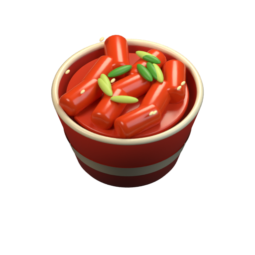
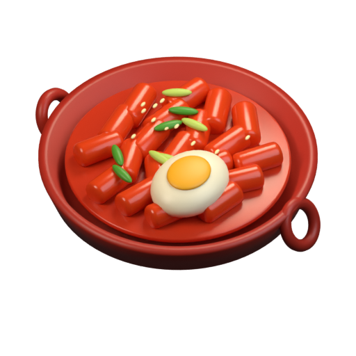
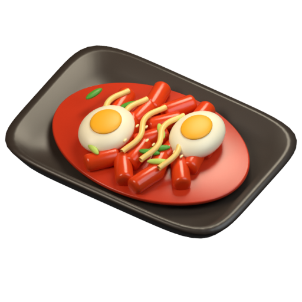

아트 비교용 · 실제 게임 진행 화면 아님같은 메뉴, 두 가지 제작 방식
밝기보다 작은 크기에서 단계가 구분되는지, 옆 체인과 어울리는지 확인합니다.
양쪽 모두 같은 칸 크기입니다. 접시 안의 음식 크기와 여백도 함께 비교하세요. 후보는 일반 저장의 기본 아트를 교체하지 않습니다.



A 실제 머지 비교 B 실제 머지 비교
실제 머지 비교는 임시 진단 저장을 사용합니다. 에너지·재고 조건은 일반 게임의 경제 평가에 사용하지 않습니다.